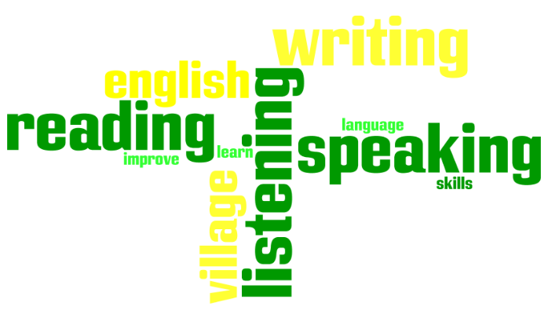

Own Business Management
Description
ကိုယ်ပိုင်စီးပွားရေး လုပ်ငန်းများကို စတင်လုပ်ကိုင်လိုသူများနှင့် ကိုယ်ပိုင်လုပ်ငန်းရှင်များအတွက် Certifiction in Own Business Management (Online) သင်တန်း ကိုစတင် ဖွင့်လှစ်သွားပါမည်။
သင့်လုပ်ငန်းတိုးတက်ဖို့ နည်းလမ်းများကို ရှာဖွေပါ။
ကိုယ်ပိုင်စီးပွားရေးလုပ်ငန်းရှင် တစ်ယောက်အနေဖြင့် မိရိုးဖလာ ကိုယ်ပိုင်လုပ်ငန်းများကို စနစ်တကျ စီမံခန့်ခွဲလာရာမှတိုးတက်ပြောင်းလဲနေသော စီးပွားရေးဈေးကွက်တွင် မိမိလုပ်ငန်းတိုးတက်ဖို့အတွက် နည်းလမ်းများကို ရှာဖွေဖို့ လိုအပ်လာပါသည်။
Future Education တွင် ကိုယ်ပိုင်စီးပွားရေးလုပ်ငန်းရှင်များ နှင့် ကိုယ်ပိုင်စီးပွားရေးလုပ်ငန်း စတင်လုပ်ကိုင်ရန် ပြင်ဆင်နေသူများအတွက် Certificate in Own Business Management (Manage your Business) (Online) သင်တန်း ကိုအွန်လိုင်း သီးသန့် ဖွင့်လှစ်သွားပါမည်။
မိမိ ကိုယ်ပိုင်လုပ်ငန်းများကိုစနစ်တကျ ဘယ်လိုစီမံခန့်ခွဲမလဲ?
ဆရာကြီး၊ ဆရာမကြီးများမှလည်း လုပ်ငန်းရှင်များအတွက် မိမိစီးပွားရေးလုပ်ငန်းတွင် လိုအပ်သောစွမ်းဆောင်ရည်များ ၊ စီမံခန့်ခွဲမှုဆိုင်ရာသဘောတရားများ၊ စီမံခန့်ခွဲသူတစ်ယောက်ရဲ့ လုပ်ငန်းတာဝန်များ၊ ဘဏ္ဍာရေးဆိုင်ရာ စီမံခန့်ခွဲမှုများ နှင့် မိမိလုပ်ငန်းရဲ့ အရှုံးအမြတ်စာရင်းတွေ၊ ဈေးကွက်တွင် ထိုးဖောက်ရန်အတွက် ကောင်းမွန်သော ကြော်ငြာများ နှင့် အရောင်းမြှင့်တင်မှုပိုင်းဆိုင်ရာ များကို လည်းသင်ကြားပေးသွားပါမည်။ ထို့အပြင် လုပ်ငန်းထဲတွင် ထုတ်လုပ်မှုနှင့် လုပ်ငန်းစဉ် လည်ပတ်ခြင်းဆိုင်ရာသဘောတရားများ၊ ဝန်ထမ်းပိုင်ဆိုင်ရာ ရွေးချယ်ခန့်ထားခြင်းအကြောင်းများကို သက်ဆိုင်ရာနယ်ပယ်အသီးသီးမှ အတွေ့ကြုံရှိ ဆရာကြီး၊ ဆရာမကြီးများမှ Lecture Videos + Workshops (ZOOM) များ ဖြင့် သင်ကြားပေးသွားပါမည်။ သင်တန်းတက်ရောက် ရမည့်ပုံစံ သည် လုပ်ငန်းရှင်များအတွက် မိမိတို့ အဆင်ပြေသော အချိန်တွင် ကြိုတင်ရိုက်ကူးထားသည့် သင်ခန်းစာ Video များကို ကြိုတင်လေ့လာရမည်ဖြစ်ပြီး ဘာသာရပ်တစ်ခုချင်းဆီအလိုက် လက်တွေ့ပိုင်းဆိုင်ရာ လေ့ကျင့်ဆွေးနွေးနိုင်မည့် Face to Face Online Workshop အတန်းချိန်များကို Online မှ ZOOM ဖြင့် တက်ရောက်ပေးရပါမည်။
English
Elementary for Professional
Description
4 Skills in English သင်တန်းများ

အလုပ်တစ်ဖက်နှင့် မအားလပ်သော လူကြီးများအတွက် ရုံးချိန်လွတ်
4 Skills in English for Professionals သင်တန်းများ တန်းခွဲသစ်များ စမည်။
အင်္ဂလိပ်စာ ကျွမ်းကျင်မှု အပြင်၊ ဗဟုသုတအစုံအလင်ရရှိပြီး
critical thinking, creative thinking, communication skills, self-management skills များ
တိုးတက်စေသော နည်းလမ်းများဖြင့် သင်ကြားပေးပါသည်။
ရုံးချိန်လွတ် သင်တန်းများ
- Elementary Level (50 hrs)
- Pre-Intermediate Level (50 hrs)
- Intermediate Level 1 (50 hrs)
- Advanced Level 2 (50 hrs)
Level Test အခမဲ့ ဖြေဆိုရန် စာရင်းပေးသွင်းပါ။
Professional Certificate in Corporate Finance
Description
Corporate Finance ဘာသာရပ်သည် Company တစ်ခု၏ Finance ကဏ္ဍအတွက် သိရှိထားသင့်သော ဘာသာရပ် တစ်ခုဖြစ်ပြီး အချိန်ကွာခြားမှူပေါ် မူတည်၍ ငွေတန်ဖိုးပြောင်းလဲပုံ၊ future value နဲ့ present value များကိုတွက်ချက်ပုံ၊ Perpetuity နှင့် Annuity အကြောင်း စတာတွေကိုလည်း လေ့လာရမှာဖြစ်ပါတယ်။ Corporate Finance အတန်းမှာ လုပ်ငန်းတွေ Investment ပြုလုပ်ရာမှာ ထည့်သွင်းစဉ်းစားရမဲ့ Cost of Capital ဆိုတာဘာလဲ၊ ဘဏ္ဍာငွေရှာဖွေ တဲ့အခါမှာShare တွေရဲ့ Value ကိုဘယ်လို သတ်မှတ်မလဲ၊ တန်ဖိုးဘယ်လောက်ရှိလဲ။ Investor တွေက ဘယ်လောက်် Return တွေပြန်ရနိုင်မလဲ။
Bondတွေ ရဲ့ Value ကိုဘယ်လိုတွက်ချက်မလဲ၊ Bond တွေရဲ့ feature တွေကဘာတွေလဲ၊ Bond အမျိုးအစားတွေအကြောင်းသင်ကြားရမှာဖြစ်ပါတယ်။ဒါ့အပြင် Bond တွေကို ဘယ်လောက်နဲ့ရောင်းသင့်မလဲ ( Bond Value ဘယ်လောက်လဲ )၊ Bond စျေးအပြောင်းအလဲအတွက် ဘယ်အချက်တွေက သက်ရောက်မှုရှိမလဲစတဲ့ Bond Valuation နဲ့ ပတ်သတ်တဲ့အရာတွေကိုလည်းသင်ရမှာဖြစ်တဲ့အပြင်၊ Investor တွေအနေနဲ့Investment တွေမှာရှိနိုင်တဲ့ Riskတွေနဲ့ အဲ့ဒီ Risk ဘယ်လိုလျော့ချမလဲ၊ Future မှာဖြစ်ပေါ်လာနိုင်တဲ့မသေချာမူRisk တွေကနေပြန်ရလာနိုင်တဲ့ Return စတဲ့ Risk & Return ရဲ့ချိတ်ဆက်နေမှူတွေအကြောင်းလေ့လာသွားရမှာ ဖြစ်ပါတယ်။
ဒီဘာသာရပ်ကိုဘယ်သူတွေတက်သင့်သလဲ?
ကိုယ်ပိုင်လုပ်ငန်းလုပ်ကိုင်နေသူများ/Finance Managerများ နှင့် Senior Business Manager များ/ Company တစ်ခု၏ Finance ပိုင်းတွင် ဝင်ရောက်လုပ်ကိုင်နေသူများ / Corporate Finance ဘာသာရပ်ကို လေ့လာရန်လိုအပ်သူများနှင့် စိတ်ဝင်စားသူများတက်ရောက်နိုင်ပါတယ်။